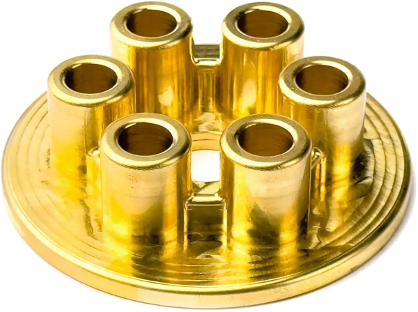

CNC-Bearbeitung
Wenn das Teil aus Metall oder sehr präzise sein muss, fräsen wir es aus dem Vollen. Die ideale Ergänzung zum 3D-Druck.

CNC-Bearbeitung in 3 Schritten
Ein Materialblock
Wir beginnen mit einem Rohblock: Aluminium, Messing, technischer Kunststoff…
Der Fräser trägt ab
Ein schnell drehender Fräser trägt das Material gemäß Ihrer 3D-Datei ab.
Ein Teil aus dem Vollen
Das Ergebnis ist ein massives, präzises Teil mit schöner Oberfläche.
Ihr Teil
Senden Sie Ihre Datei: Wir bestätigen, dass die CNC-Bearbeitung die richtige Wahl ist, oder empfehlen Ihnen eine andere Technologie.
Wann wählen?
TurbinenradZum Drehen ziehen
- Metallteile
- Präzise Passungen und Bohrungen
- Mechanische Teile, die Verschleiß oder Hitze ausgesetzt sind
- Platten, Halterungen, Kleinserien
- Manche Innenformen sind unmöglich (dem 3D-Druck vorbehalten)
- Mehr Materialverschnitt als beim 3D-Druck
- Größe durch den Maschinentisch begrenzt
Unsere CNC-Maschinen
Unsere CNC-Werkstoffe

Aluminium
Leicht · Zerspanbar · Vielseitig
Datenblatt ansehen →
Messing
Zerspanbar · Ästhetisch · Leitfähig
Datenblatt ansehen →
Kupfer
Leitfähig · Zerspanbar · Ästhetisch
Datenblatt ansehen →
Bronze
Verschleißfest · Selbstschmierend · Langlebig
Datenblatt ansehen →
Titan
Ultrafest · Leicht · Biokompatibel
Datenblatt ansehen →
POM (Delrin®)
Gleitfähig · Stabil · Präzise
Datenblatt ansehen →
Ertalon® (PA6)
Zäh · Verschleißfest · Dämpfend
Datenblatt ansehen →Ein Teil zu fertigen?
Senden Sie Ihre 3D-Datei oder beschreiben Sie Ihren Bedarf: Sofortangebot mit Datei, individuelles Angebot innerhalb von 24 h.